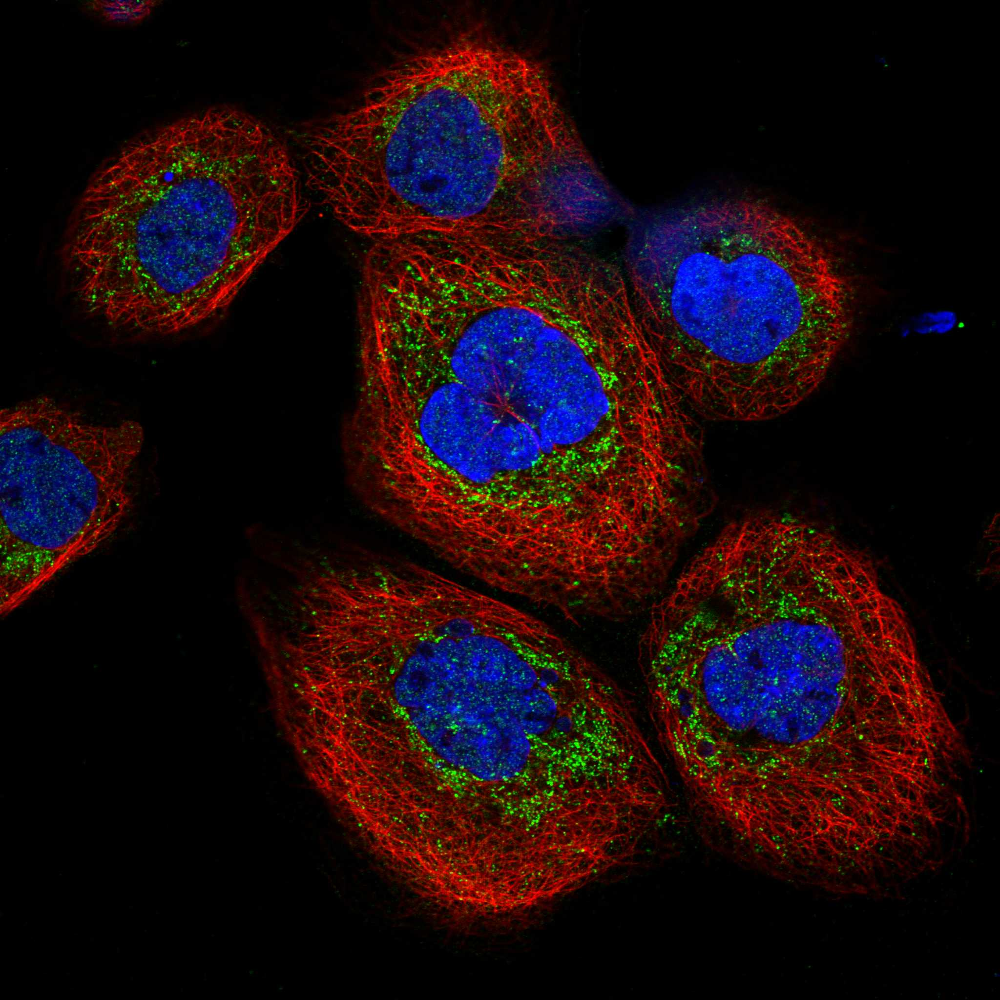
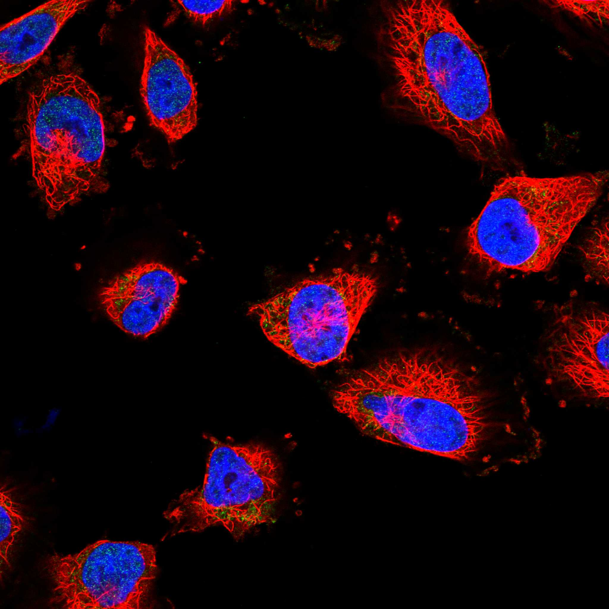
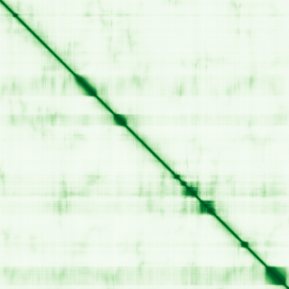

type: protein-evaluation gene: "GSE1" date: 2026-06-03 tags: [protein-scout, nuclear-protein, evaluation] status: scored ---
GSE1 核蛋白评估报告 (Full Re-evaluation)
1. 基本信息
| 项目 | 内容 |
|---|---|
| 基因名 / 别名 | GSE1 / KIAA0182 |
| 蛋白名称 | Genetic suppressor element 1 |
| 蛋白大小 | 1217 aa / 136.2 kDa |
| UniProt ID | Q14687 |
| 评估日期 | 2026-06-03 |
2. 评分总览
| 维度 | 得分 | 满分 | 加权后 | 关键证据摘要 |
|---|---|---|---|---|
| 核定位特异性 | 4/10 | ×4 | 16 | HPA: Mitochondria; 额外: Nucleoplasm; UniProt: 无注释 |
| 蛋白大小 | 5/10 | ×1 | 5 | 1217 aa / 136.2 kDa |
| 研究新颖性 | 8/10 | ×5 | 40 | PubMed strict=33 篇 (≤40→8) |
| 三维结构 | 6/10 | ×3 | 18 | AlphaFold v6 pLDDT=54.2; PDB: 无 |
| 调控结构域 | 7/10 | ×2 | 14 | InterPro: IPR022207, IPR042337; Pfam: PF12540 |
| PPI 网络 | 3/10 | ×3 | 9 | STRING 15 partners; IntAct 15 interactions |
| 互证加分 | — | max +3 | 0.5 | PDB+AF+STRING+IntAct cross-validation |
| 原始总分 | 102.5/180 | |||
| 归一化总分 | 56.9/100 |
3. 详细分析
3.1 核定位证据
| 来源 | 定位 | 可信度 |
|---|---|---|
| Protein Atlas (IF) | Mitochondria; 额外: Nucleoplasm | Approved |
| UniProt | 无注释 | Swiss-Prot/TrEMBL |
IF 图像获取: 未下载本地IF图像（standard evaluation），核定位证据基于HPA subcellular localization注释、UniProt注释和GO-CC术语。
GO Cellular Component:
- 无 GO-CC 注释
结论: 核定位信号较弱，多个数据源显示混合定位或非核偏好。
3.2 蛋白大小评估
评价: 蛋白偏小/偏大，实验操作有一定难度。
3.3 研究现状
| 指标 | 数值 |
|---|---|
| PubMed strict count | 33 |
| PubMed broad count | 65 |
| 别名(未计入scoring) | Aliases observed but not used for scoring: KIAA0182 |
关键文献: 1. Gse1, a component of the CoREST complex, is required for placenta development in the mouse.. *Developmental biology*. PMID: 37019373 2. GSE1 promotes the proliferation and migration of lung adenocarcinoma cells by downregulating KLF6 expression.. *Cell biology international*. PMID: 38886911 3. GSE1 negative regulation by miR-489-5p promotes breast cancer cell proliferation and invasion.. *Biochemical and biophysical research communications*. PMID: 26828271 4. Circ_0001982 aggravates breast cancer development through the circ_0001982-miR-144-3p-GSE1 axis.. *Journal of biochemical and molecular toxicology*. PMID: 37867456 5. Overexpression of GSE1 Related to Trastuzumab Resistance in Gastric Cancer Cells.. *BioMed research international*. PMID: 33623790
评价: 非常新颖，仅有少数基础研究。
3.4 三维结构分析
| 指标 | 数值 |
|---|---|
| AlphaFold 版本 | v6 |
| AlphaFold 平均 pLDDT | 54.2 |
| 高置信度残基 (pLDDT>90) 占比 | 7.6% |
| 置信残基 (pLDDT 70-90) 占比 | 21.9% |
| 中等置信 (pLDDT 50-70) 占比 | 9.0% |
| 低置信 (pLDDT<50) 占比 | 61.5% |
| 有序区域 (pLDDT>70) 占比 | 29.5% |
| 可用 PDB 条目 | 无 |
PAE: PAE 图像未生成本地文件（standard evaluation），结构判断基于 AlphaFold pLDDT 统计。
评价: AlphaFold 预测质量有限（pLDDT=54.2），有序残基占 29.5%。
3.5 结构域分析
| 来源 | 结构域 |
|---|---|
| InterPro/Pfam | InterPro: IPR022207, IPR042337; Pfam: PF12540 |
染色质调控潜力分析: 存在已知结构域注释，可作为功能研究的结构基础。
3.6 PPI 网络
STRING 预测互作 (combined score >0.4):
| Partner | Combined Score | Experimental | 功能类别 |
|---|---|---|---|
| HMG20B | 0.975 | 0.838 | — |
| HDAC1 | 0.952 | 0.641 | — |
| HMG20A | 0.951 | 0.819 | — |
| KDM1A | 0.917 | 0.678 | — |
| RCOR1 | 0.906 | 0.477 | — |
| RCOR3 | 0.871 | 0.628 | — |
| HDAC2 | 0.868 | 0.643 | — |
| SNAI1 | 0.841 | 0.828 | — |
| ZMYM2 | 0.779 | 0.100 | — |
| ZMYM3 | 0.716 | 0.100 | — |
实验验证互作 (IntAct):
| Partner | 方法 | PMID | ||
|---|---|---|---|---|
| ENSP00000253458.6 | psi-mi:"MI:0397"(two hybrid array) | imex:IM-23318 | pubmed:25416956 | |
| NUDT18 | psi-mi:"MI:0398"(two hybrid pooling approach) | pubmed:16189514 | imex:IM-16520 | |
| RBPMS | psi-mi:"MI:0398"(two hybrid pooling approach) | pubmed:16189514 | imex:IM-16520 | |
| RCOR3 | psi-mi:"MI:0398"(two hybrid pooling approach) | pubmed:16189514 | imex:IM-16520 | |
| RBM48 | psi-mi:"MI:0398"(two hybrid pooling approach) | pubmed:16169070 | imex:IM-16517 | |
| XRCC6 | psi-mi:"MI:0398"(two hybrid pooling approach) | pubmed:16169070 | imex:IM-16517 | |
| SAM35 | psi-mi:"MI:0397"(two hybrid array) | pubmed:14690591 | ||
| CDC5L | psi-mi:"MI:0018"(two hybrid) | pubmed:17043677 | imex:IM-16650 | |
| CEP63 | psi-mi:"MI:0018"(two hybrid) | pubmed:17043677 | imex:IM-16650 | |
| TULP3 | psi-mi:"MI:0399"(two hybrid fragment pooling appro | pubmed:23414517 | imex:IM-16425 |
PPI 互证分析:
- STRING + IntAct 均有数据
- STRING partners: 15，IntAct interactions: 15
- 调控相关比例: 0 / 15 = 0%
评价: STRING 15 个预测互作，IntAct 15 个实验互作。调控相关配体占比 0%。
3.7 多库互证
| 维度 | 来源 | 结果 | 是否一致 |
|---|---|---|---|
| 三维结构 | AlphaFold pLDDT=54.2 + PDB: 无 | pLDDT=54.2, v6 | 仅预测 |
| 定位 | UniProt + HPA | 无注释 / Mitochondria; 额外: Nucleoplasm | 待确认 |
| PPI | STRING + IntAct | 15 + 15 interactions | 数据充分 |
互证加分明细:
- PDB + AlphaFold 双源验证: +0
- 多库定位一致: +0
- STRING + IntAct 双源验证: +0.5
- 结构域 + AlphaFold 质量: +0
- PDB 多条目覆盖: +0
总分: +0.5 / max +3
4. 总体评价
推荐等级: ⭐⭐⭐
核心优势: 1. GSE1 — Genetic suppressor element 1，非常新颖，仅有少数基础研究。 2. 蛋白大小1217 aa，蛋白偏小/偏大，实验操作有一定难度。
风险/不确定性: 1. PubMed 33 篇，已有一定研究基础 2. AlphaFold 预测质量一般（pLDDT=54.2），需要更多实验结构验证
下一步建议:
- [ ] 查阅最新关键文献补充研究背景
- [ ] 获取 Protein Atlas IF 图像确认亚细胞定位
- [ ] 设计体外实验验证核定位及潜在调控功能
5. 数据来源
- UniProt: https://www.uniprot.org/uniprotkb/Q14687
- Protein Atlas: https://www.proteinatlas.org/ENSG00000131149-GSE1/subcellular
- PubMed: https://pubmed.ncbi.nlm.nih.gov/?term=GSE1
- AlphaFold: https://alphafold.ebi.ac.uk/entry/Q14687
- STRING: https://string-db.org/network/9606.ENSP00000
- Data fetched live: 2026-06-03
 
